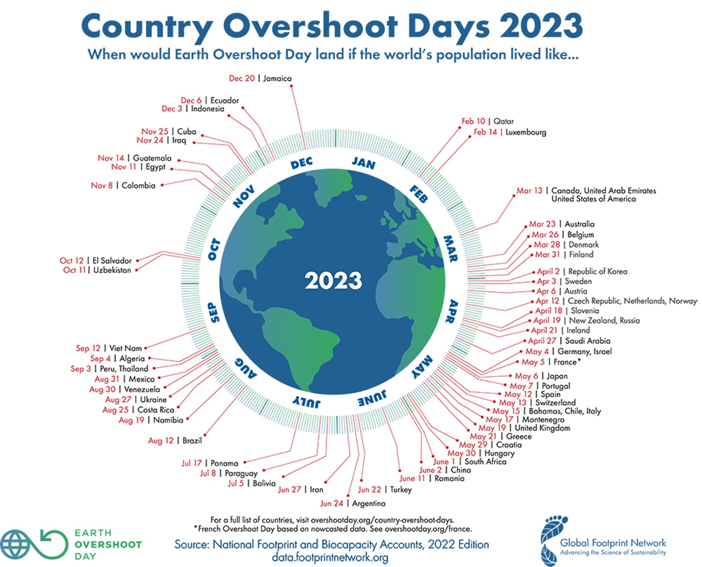

¿Qué es la Sustentabilidad?
La sustentabilidad se define como el desarrollo que permite satisfacer las necesidades del presente sin comprometer la capacidad de las futuras generaciones de satisfacer sus necesidades propias
¿Qué principios incluye la sustentabilidad?
Normalmente, cuando se menciona la sustentabilidad se tiende a relacionar exclusivamente con el medio ambiente. Términos como bajo en emisiones, amigable con el ambiente, o ecoamigable se asocian como características o incluso sinónimos de la sustentabilidad. Sin embargo, la sustentabilidad es un concepto más amplio.
La sustentabilidad se basa en tres pilares fundamentales: el ambiental, el social y el económico. Por ende, la sustentabilidad busca un balance en esos tres aspectos. Un producto, un servicio o una organización que no contemple en conjunto los aspectos ambientales, sociales o económicos no puede considerarse sustentable. La sustentabilidad busca evitar la degradación del ambiente, procurar la prosperidad de las personas y sociedades más inclusivas y libres de violencia.
¿Cómo se puede medir la sustentabilidad?
La sostenibilidad puede medirse de manera cuantitativa mediante indicadores. A continuación, se muestran algunos de los más importantes.
Huella de carbono:
La huella de carbono es una métrica ambiental que calcula la totalidad de las emisiones de gases de efecto invernadero (GEI) generadas, directa e indirectamente, por una persona, un grupo, una organización, empresa o incluso un producto o servicio.
La huella de carbono se mide en masa de CO2 equivalente (CO2 eq). Se usa así porque el CO2 es el gas más abundante entre los GEI y se utiliza como referencia en la medición del resto de los elementos. Aunque el mayor volumen de emisión de GEI no proviene de las acciones del día a día de la mayoría de la población, saber nuestro impacto ambiental es una herramienta a favor para ser parte del cambio de conciencia y tomar acción.
En el siguiente enlace es posible calcular la huella de carbono de nuestras actividades diarias
Ir a calcular la huella de carbonoHuella hídrica:
La huella hídrica, es decir, la apropiación humana del agua dulce, es un indicador tanto del volumen de agua utilizado para producir algo, como de su origen: agua de lluvia (huella hídrica verde), agua superficial y subterránea (huella hídrica azul), y agua contaminada (huella hídrica gris).
El estudio de la huella hídrica permite visualizar el uso oculto del agua e indica el camino por el que transita el agua a través de un producto, proceso, industria, consumidor, cuenca, estado o país. Esto permite evaluar su sostenibilidad e identificar cómo y dónde el consumo en un lugar impacta los recursos hídricos en otro sitio.
En el siguiente enlace es posible calcular la huella hídrica de nuestras actividades diarias
Ir a calcular la huella hídricaDía de sobrecarga de la tierra:
El día de sobrecarga de la tierra (Earth overshoot day) es un indicador que permite estimar el nivel de sostenibilidad. El overshoot day marca la fecha del año en que se consumen los recursos que la tierra puede renovar en un año.
En la siguiente figura puede observarse el día de sobrecarga de la tierra para los países del mundo en el año 2023
Referencias
Instituto Mexicano de Tecnología del Agua. (2019). Huella Hídrica. Consultado: 07/08/2023. Disponible en: https://www.gob.mx/imta/articulos/huella-hidrica
Quental, N., Lourenço, J. M., & Da Silva, F. N. (2011). Sustainable development policy: Goals, targets and political cycles. Sustainable Development, 19(1), 15–29. https://doi.org/10.1002/sd.416
United Nations. (2015). Transforming our world: the 2030 Agenda for Sustainable Development.
WWF. (2023) Día de sobrecapacidad de la tierra. Consultado: 07/08/2023. Disponible en: https://www.wwf.es/nuestro_trabajo/informe_planeta_vivo_ipv/huella_ecologica/dia_de_la_sobrecapacidad_de_la_tierra/